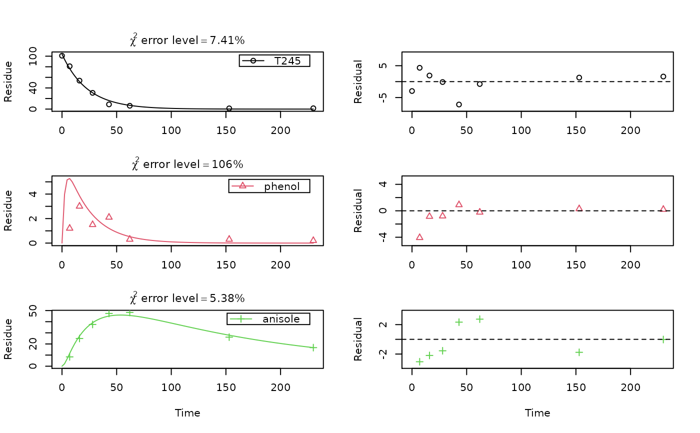

mccall81_245T.RdTime course of 2,4,5-trichlorophenoxyacetic acid, and the corresponding 2,4,5-trichlorophenol and 2,4,5-trichloroanisole as recovered in diethylether extracts.
mccall81_245T
A dataframe containing the following variables.
namethe name of the compound observed. Note that T245 is used as
an acronym for 2,4,5-T. T245 is a legitimate object name
in R, which is necessary for specifying models using
mkinmod.
timea numeric vector containing sampling times in days after treatment
valuea numeric vector containing concentrations in percent of applied radioactivity
soila factor containing the name of the soil
McCall P, Vrona SA, Kelley SS (1981) Fate of uniformly carbon-14 ring labeled 2,4,5-Trichlorophenoxyacetic acid and 2,4-dichlorophenoxyacetic acid. J Agric Chem 29, 100-107 http://dx.doi.org/10.1021/jf00103a026
SFO_SFO_SFO <- mkinmod(T245 = list(type = "SFO", to = "phenol"), phenol = list(type = "SFO", to = "anisole"), anisole = list(type = "SFO"))#>#> Warning: Observations with value of zero were removed from the data#> Warning: NaNs wurden erzeugt#> Estimate se_notrans t value Pr(>t) Lower #> T245_0 1.038550e+02 2.1508110557 48.286452 3.542232e-18 99.246062215 #> k_T245_sink 1.636106e-02 NaN NaN NaN 0.012661558 #> k_T245_phenol 2.700936e-02 NaN NaN NaN 0.024487315 #> k_phenol_sink 1.788604e-10 NaN NaN NaN 0.000000000 #> k_phenol_anisole 4.050581e-01 0.1053801116 3.843781 7.970202e-04 0.218013982 #> k_anisole_sink 6.678742e-03 0.0006205844 10.762020 9.428076e-09 0.005370739 #> sigma 2.514628e+00 0.3383670685 7.431657 1.054101e-06 1.706607296 #> Upper #> T245_0 1.084640e+02 #> k_T245_sink 2.114150e-02 #> k_T245_phenol 2.979116e-02 #> k_phenol_sink Inf #> k_phenol_anisole 7.525759e-01 #> k_anisole_sink 8.305299e-03 #> sigma 3.322649e+00endpoints(fit.1)#> $ff #> T245_sink T245_phenol phenol_sink phenol_anisole anisole_sink #> 3.772401e-01 6.227599e-01 4.415672e-10 1.000000e+00 1.000000e+00 #> #> $SFORB #> logical(0) #> #> $distimes #> DT50 DT90 #> T245 15.982025 53.09114 #> phenol 1.711229 5.68458 #> anisole 103.784092 344.76329 #># k_phenol_sink is really small, therefore fix it to zero fit.2 <- mkinfit(SFO_SFO_SFO, subset(mccall81_245T, soil == "Commerce"), parms.ini = c(k_phenol_sink = 0), fixed_parms = "k_phenol_sink", quiet = TRUE)#> Warning: Observations with value of zero were removed from the data#> Estimate se_notrans t value Pr(>t) Lower #> T245_0 1.038550e+02 2.1623653063 48.028441 4.993105e-19 99.271025146 #> k_T245_sink 1.636106e-02 0.0019676255 8.315130 1.673674e-07 0.012679148 #> k_T245_phenol 2.700936e-02 0.0012421966 21.743224 1.314080e-13 0.024500319 #> k_phenol_anisole 4.050581e-01 0.1177235488 3.440757 1.679237e-03 0.218746679 #> k_anisole_sink 6.678742e-03 0.0006829745 9.778904 1.872892e-08 0.005377084 #> sigma 2.514628e+00 0.3790944250 6.633250 2.875782e-06 1.710983655 #> Upper #> T245_0 108.43904395 #> k_T245_sink 0.02111217 #> k_T245_phenol 0.02977535 #> k_phenol_anisole 0.75005504 #> k_anisole_sink 0.00829550 #> sigma 3.31827222endpoints(fit.1)#> $ff #> T245_sink T245_phenol phenol_sink phenol_anisole anisole_sink #> 3.772401e-01 6.227599e-01 4.415672e-10 1.000000e+00 1.000000e+00 #> #> $SFORB #> logical(0) #> #> $distimes #> DT50 DT90 #> T245 15.982025 53.09114 #> phenol 1.711229 5.68458 #> anisole 103.784092 344.76329 #>plot_sep(fit.2)